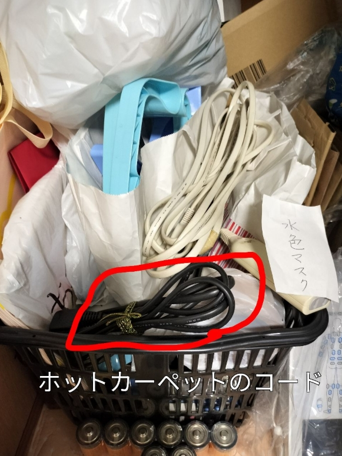
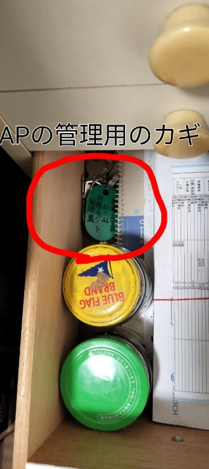
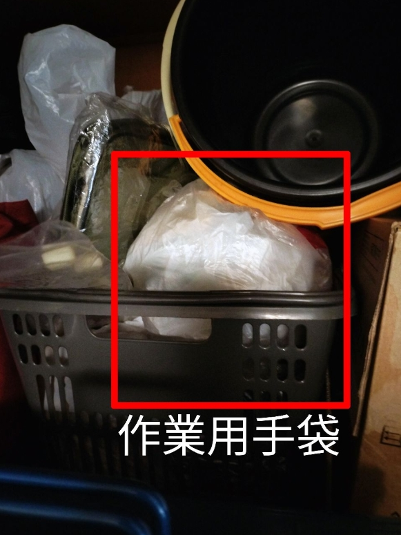

開発の経緯
日々の買い物で「買う物のメモ書き」を作成して持参していませんか？店舗でメモを見ながらカゴに入れたら線を引き・・・ですよね😢
私達夫婦も70歳目前の高齢者になり、メモ作成が億劫で面倒になり、何とか簡単に出来ないものかと思いこのアプリを開発しました。
その他「日常の困りごと」をひとつに纏めて解決できればと考え多機能アプリに仕上げました。
例えば、「あれ、どこに置いたっけ・・・」と、探し回った経験はありませんか？私達夫婦でも自分達が片づけて「しまい込んだ物」の場所を覚えられず、思い出せず、で、結果、持っているのに再度購入してしまうことが度々ありました。年を重ねて高齢になると記憶との戦いが始まります。
ここに「ホットカーペットのコード・APの配電盤とパイプシャフトの鍵・作業用手袋」という3枚の写真があります。これは、数年前から私達が片づけてしまい込んだ状態をスマホで撮影後に簡単な編集をして名前を音声入力して保存した写真です。こうやって写真で記録するようになって以後、見つけられずに購入することはなくなりました。

写真 P1ホットカーペットのコードファイル名：images/p1_hot_carpet_cord.png

写真 P2APの配電盤とパイプシャフトの鍵ファイル名：images/p2_key.png

写真 P3作業用手袋ファイル名：images/p3_gloves.png
ある時、娘から「アレクサに覚えてもらえばいいのに」と勧められ挑戦してみましたが、記憶させた内容を必要な時に瞬時に思い出せず、うまくいきませんでした。やっぱり「百聞は一見にしかず」で、言葉は写真に勝てません。
「重要事項を書き込んだ写真なら詳細を簡単に確認可能」そうです、文字だけ写真だけでは駄目なんです。この【DokoOita】は、そんな「くらしの困った？」を手助けするアプリです。
この【DokoOita】アプリをひとりでも多くの皆様にご利用いただき、ご意見を賜れますようお願いする次第です🙏